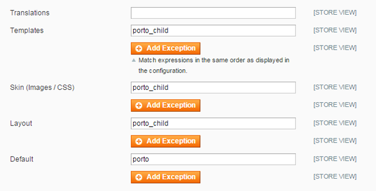
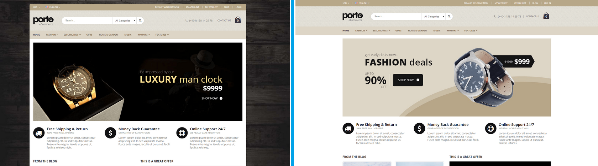
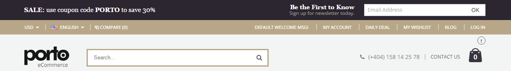
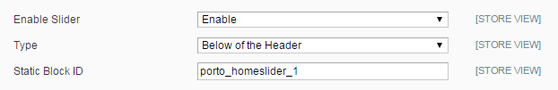
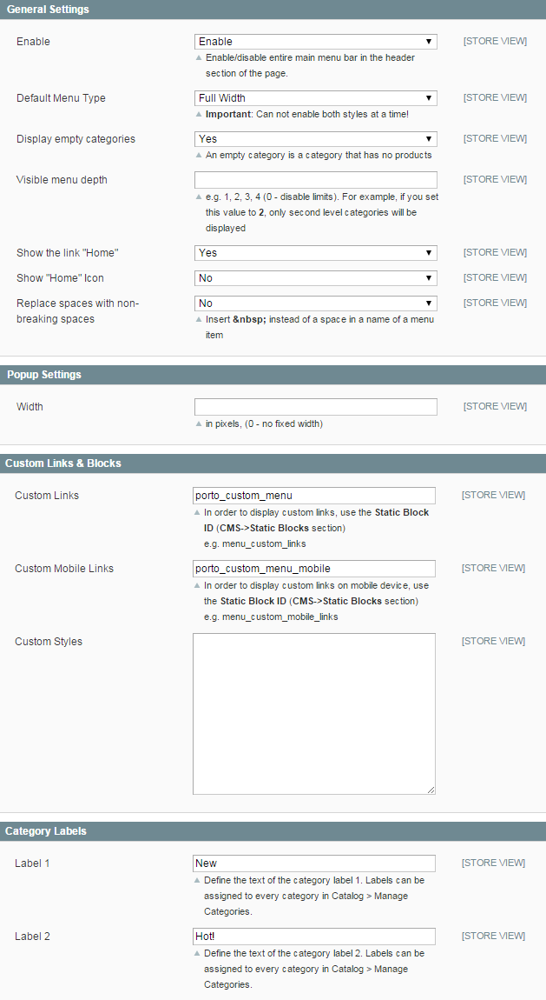
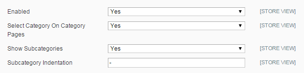

开始了解的Magento
首先，我们需要了解下的Magento
Magento的是一个电子商务系统解决方案，从本质上来说，它是一个类似的WordPress的CMS，只是它更偏向于商城。由于Magento的在国内使用人数不多，国外比较普遍，所以国内教程较少，从事这个行业开发的也较少，因此学习这个系统成本较高，因此为了让大家能够尽快的了解这个系统而制作了本教程，为了不受其他细枝末节的东西干扰，我们尽可能单刀直入，直奔主题。
请记得：Magento的是一个纯商城系统，功能强大，的英文号称宇宙最强大的商城系统-
Magento的的发展历程
的magento的发展，版本已经经历了无数的迭代更新，越来越成熟，也越来越接近完美，如果了解更详细的信息，可以前往Magento的网官参考
Magento具有的特点
Magento的跟其他CMS一样，都有一个后台管理系统，方便可视化的进行编辑和设置，但是跟其他系统又存在一些不一样的地方，操作习惯和术语的称呼会有所不一样，特别是长期使用的WordPress的用户，可能会有短暂的一个适应期。
- 1，开源的电子商务系统，免费使用，除了企业版需要收费
- 2，magento的有商用版，专业版和免费版。
- 3，系统由：系统文件，主题，插件组成，这点跟WordPress的很相似
- 如图4所示，安全度非常高
- 5，更新时间较快，社区支持
- 如图6所示，对系统资源要求较高，不同版本对PHP中，MySQL要求不一样。
- 7，慢，这个估计是magento的最大的弱点了
主题安装
安装的准备阶段
- 先确定主题是针对哪个magento的版本的，的magento的分水岭是magento1.x和magento2.x，通常在我们选择主题的时候就应该确定好这个是magento1.x的还是magento2.x的主题。
- 主题的文件的完整性检查，有的主题可能不完整或者是说一个主题必要的配置文件是否缺失，这样的话会可以在安装前就排查好，避免安装后再排查，增加了难度。
- 禁用您的Magento的中的所有缓存相关部分
- 上传主题文件，如果我们在本地服务器调试那么只需要把文件放在本地网络服务器的根目录即可
- 备份Magento的文件和商店数据库。如果你是第一次使用的Magento的话，需要这样做，这样比较安全，万一出错了可以恢复
重要提示！
确定主题是快速安装包那种还是只是主题安装包，快速安装包是包含了magento的系统文件的，简单的说就是包含了整个源码的安装包，这种情况的话，那么直接把这个安装包放在网络服务器的根目录下，然后运行安装即可;如果是单纯的主题文件，也就是一个主题而已，那么就要把这个主题文件放在主题该放的目录下，这个目录位置不同的磁版本事不一样的，这里说的不同的Magento的版本是指magento1.x和magento2.x的区别。重要提示！
的magento的缓存是很重要的，这个跟WordPress的很不一样，虽然WordPress的也有缓存插件，但是有不一样的理解，当我们安装完了主题后，可能不会马上出现我们想要的效果，这个时候怎么办，虽然还没有立即生效有很多原因，但是很多时候是我们没有清除缓存，我们可以在magento的后台找到缓存管理，然后清除缓存，然后再次查看。重要提示！
首先也是最简单的方法就是从Magento的下载页面下载，HTTPS：//www.magentocommerce.com/download
在这个安装中，Magento的核心代码存储在/供应商的目录下，通过Magento的管理员可以更新。
所以接下来的步骤很简单，只需要通过服务器的方式访问这个目录所在的文件，就可以进行安装
主题文件上传
- 其次，但不是最后的方案，通过Composer安装Magento。Composer是PHP中依赖管理的工具。要了解更多信息，请访问这个链接https://getcomposer.org/doc/00-intro.md。
- 以这个方式安装，Magento核心代码也存储在/vendor目录下，通过Magento管理员可以更新。
- 你首先需要在这里可以获得的认证金钥，你需要Magento的帐号登录。
- 登录后，进入“我的访问键”，输入一些描述性的“名称”，并生成一组新的密钥.Magento使用这种方法，因为将来，通过Magento管理界面，您可以从Marketplace购买扩展程序。
- 在终端输入这个命令：
composer create-project --repository-url=https://repo.magento.com/ magento/project-community-edition
出现提示时，您的公钥是用户名，私钥是密码。之后，Magento的准备安装。通过安装向导并安装它。这是没有样本数据。因此，要安装示例数据，请通过终端导航到您的Magento 2根目录，然后运行以下命令：
php bin/magento sampledata:deploy
php bin/magento setup:upgrade
这两个命令将更新您的composer.json文件并安装示例数据。如果在安装示例数据后收到此消息请请重新运行Magento编译命令在终端中输入以下内容：
php bin/magento setup:di:compile
这个过程可能需要一些时间才能完成。
第三，也是最后一个，是从GitHub的仓库克隆或下载版本。
在这个安装中，我会告诉你如何避免设置向导，并通过终端安装Magento的。但是，它一提的是在此安装的Magento的核心代码存储下是非常重要的应用程序/代码不是销售商/像前面的两个例子。
当您尝试通过管理界面更新的Magento时，您会收到错误信息，表示这是GitHub的版本，无法更新.GitHub的发布版本打算供贡献者/开发者使用。
首先，我们必须从这里克隆Magento的回购：HTTPS：//github.com/magento/magento2或者你可以在https://github.com/magento/magento2/releases下载发布
创建空目录并运行：
git clone git@github.com:magento/magento2.git .部署完成后，运行：
composer install现在是时候安装Magento 2.我的设置如下所示：
php -f bin/magento setup:install –base-url=http://m2.loc/2.07/github/ --backend-frontname=admin --db-host=localhost --db-name=m2git --db-user=root --db-password=inchoo --admin-firstname=Magento --admin-lastname=User --admin-email=ivan.veres@inchoo.net --admin-user=admin --admin-password=magento123 --language=en_US --currency=USD --timezone=America/Chicago –use-rewrites=1更改您的基地址，数据库名称，数据库密码，管理员电子邮件，管理员密码，以符合您的本地设置。
如果你通过浏览器访问本地链接（HTTP：//本地主机/ magento2），这里假设安装Magento2。
如果您需要样本数据，请继续。
在你的网站根目录（不是magento2）中运行：
git clone git@github.com:magento/magento2-sample-data.git导航到克隆的目录并执行：
php -f dev/tools/build-sample-data.php -- --ce-source="your Magento CE install dir"这将创建符号链接到您的Magento 2安装。
如果您在Linux的机器上，请设置所有权和权限：
chown -R :your web server group name
find . -type d -exec chmod g+ws {} \;那么你需要清除静态文件（缓存）。
导航到Magento 2 var /文件夹并输入以下内容：
rm -rf cache/* page_cache/* generation/*在Magento 2文档中没有进一步的说明。但是，您需要安装示例数据。
php bin/magento setup:upgrade
php bin/magento setup:di:compile之后，你应该安装示例数据。
如果您在http://devdocs.magento.com/guides/v2.0/install-gde/bk-install-guide.html有一些问题的参考。
为magento 1.9.2.2添加块权限
您应该在magento 1.9.2.2上的 System> Permissions> Blocks中添加块权限的块类型
- filterproducts / featured_home_list
- filterproducts / latest_home_list
- filterproducts / newproduct_home_list
- filterproducts / sale_home_list
- filterproducts / mostviewed_home_list
- filterproducts / bestsellers_home_list
- 博客/最后的
- 通讯/订阅
- 标签/流行
- zeon_manufacturer /家
演示安装
波尔图提供了非常简单的一键式演示安装。为了进行演示安装，您应该在主题设置>主题安装中导入静态块和CMS页面。
- 点击2“导入”按钮准备演示安装。
- 点击“导入演示X”按钮来安装你喜欢安装的演示版本。
主题定制
制作儿童主题并自定义主题
- 如果您需要自定义主题，我们建议您创建子主题。
- 使用“porto”在同一个目录中创建子主题
- 输入“porto_child”到系统>配置>常规>设计>主题>模板，皮肤（图像/ CSS），布局 
- 将唯一已更改的文件，而不是所有文件添加到子主题的目录中。
- 我们提供主题定制服务，但需要额外的费用，请在项目支持页面联系我们。
例
/ app / design / frontend / smartwave / porto_child/ skin / frontend / smartwave / porto_child
例
在/ skin / frontend / smartwave / porto_child / css /目录中创建custom.css文件，然后将自定义css样式添加到该文件中。主题版本更新
预更新
- 我们建议您在开发商店复制您的实时商店，并提前尝试更新波尔图版本。
- 备份magento文件和商店数据库。
- 启用magento中的所有缓存。
- 上传主题文件（参考下一部分主题文件上传）
- 在系统>工具>编译中禁用编译模式。
- 禁用您的magento中的所有缓存相关部分。
- 从magento管理面板注销并重新登录。它是重要的注销/登录再刷新您的控制面板。
重要！
在安装之前备份Magento中的所有主题和扩展非常重要，特别是在正在运行的服务器上时。我们强烈建议您不要忽略此步骤。重要！
启用缓存非常重要，因为有时，主题的某些扩展安装不正确。所以你应该在上传主题文件的时候启用缓存，那么当完成上传主题文件的时候你应该禁用或清除缓存。重要！
要使您的更改生效，您应该禁用或清除所有与缓存相关的部分，如magento默认缓存，magento缓存扩展或CDN等。最好的选择是禁用所有这些并在完成工作后启用它。主题文件上传
- 要更新所有主题文件，您可以遵循主题安装中的相同说明。
- 如果您有一些难以覆盖以前版本的所有主题文件，您可以覆盖不同版本之间更新的主题文件。要获得不同版本之间的更新文件列表，请查看我们的更新日志。
注意：
您应该允许所有主题文件的写入权限，否则magento将无法访问主题文件，如图像和CSS到您的主题配置。如果您遇到任何权限问题，请联系您的托管管理员。很重要！
我们从主题版本1.5.2中删除了Smartwave_SharingTool扩展。如果您使用的是Porto主题版本1.5.1.2或更低版本，则应删除以下文件和目录。/ app / code / local / Smartwave / SharingTool /目录
/app/design/frontend/smartwave/default/layout/smartwave_sharingtool.xml文件
/ app / design / frontend / smartwave / default / template / sharingtool / directory
/ app / design /前端/ smartwave / porto / layout / smartwave_sharingtool.xml文件
/app/etc/modules/Smartwave_SharingTool.xml文件
演示安装
波尔图提供了非常简单的一键式演示安装。为了进行演示安装，您应该在主题设置>主题安装中导入静态块和CMS页面。
- 点击2“导入”按钮准备演示安装。
- 点击“导入演示X”按钮来安装你喜欢安装的演示版本。
快速安装包
准备更新
- 我们建议您在开发商店复制您的实时商店，并提前尝试更新波尔图版本。
- 备份magento文件和商店数据库。
- 启用magento中的所有缓存。
- 上传主题文件（参考下一部分主题文件上传）
- 在系统>工具>编译中禁用编译模式。
- 禁用您的magento中的所有缓存相关部分。
- 从magento管理面板注销并重新登录。它是重要的注销/登录再刷新您的控制面板。
重要！
在安装之前备份Magento中的所有主题和扩展非常重要，特别是在正在运行的服务器上时。我们强烈建议您不要忽略此步骤。重要！
启用缓存非常重要，因为有时，主题的某些扩展安装不正确。所以你应该在上传主题文件的时候启用缓存，那么当完成上传主题文件的时候你应该禁用或清除缓存。重要！
要使您的更改生效，您应该禁用或清除所有与缓存相关的部分，如magento默认缓存，magento缓存扩展或CDN等。最好的选择是禁用所有这些并在完成工作后启用它。主题文件上传
- 要更新所有主题文件，您可以遵循主题安装中的相同说明。
- 如果您有一些难以覆盖以前版本的所有主题文件，您可以覆盖不同版本之间更新的主题文件。要获得不同版本之间的更新文件列表，请查看我们的更新日志。
注意：
您应该允许所有主题文件的写入权限，否则magento将无法访问主题文件，如图像和CSS到您的主题配置。如果您遇到任何权限问题，请联系您的托管管理员。很重要！
我们从主题版本1.5.2中删除了Smartwave_SharingTool扩展。如果您使用的是Porto主题版本1.5.1.2或更低版本，则应删除以下文件和目录。/ app / code / local / Smartwave / SharingTool /目录
/app/design/frontend/smartwave/default/layout/smartwave_sharingtool.xml文件
/ app / design / frontend / smartwave / default / template / sharingtool / directory
/ app / design /前端/ smartwave / porto / layout / smartwave_sharingtool.xml文件
/app/etc/modules/Smartwave_SharingTool.xml文件
演示安装
波尔图提供了非常简单的一键式演示安装。为了进行演示安装，您应该在主题设置>主题安装中导入静态块和CMS页面。
- 点击2“导入”按钮准备演示安装。
- 点击“导入演示X”按钮来安装你喜欢安装的演示版本。
主页配置
如何编辑首页滑块？
完成演示安装后，您可以获得与演示网站相同的滑块内容。要编辑这些滑块内容，请转到管理面板> CMS>静态块并选择必要的静态块。您可以通过基于样本内容的自定义HTML来修改滑块内容。
如何在主页上显示产品？
- 畅销产品 - 通过自动销售显示产品。
{{block type="filterproducts/bestsellers_home_list" ... }} -
特色产品 - 显示“特色”属性为“是”的产品。
{{block type="filterproducts/featured_home_list" ... }} -
查看次数最多 - 显示的是自动查看次数最多的商品。
{{block type="filterproducts/mostviewed_home_list" ... }} -
新产品 - 显示“新的日期”或“新的日期”属性的产品。
{{block type="filterproducts/newproduct_home_list" ... }} -
最新产品 - 显示所有产品自动按最新输入排序的产品。
{{block type="filterproducts/latest_home_list" ... }} -
销售产品 - 显示“特殊价格”的产品。
{{block type="filterproducts/sale_home_list" ... "}}

您可以将块代码添加到如下所示的cms内容字段中。下面的例子是用于显示其id为23的一个类别的4x3网格模式的新产品块。
{{block type="filterproducts/newproduct_home_list" name="newproduct_list" product_count="12" column_count="4" category_id="23" template="filterproducts/grid.phtml"}}您可以像上面的代码一样将属性“product_count”，“column_count”，“category_id”添加到过滤器产品块中。“column_count”属性只能与grid.phtml一起使用您可以使用“filterproducts / grid.phtml”（对于网格模式），“filterproducts / list.phtml”（对于owl-slider模式），“filterproducts / sidebar_list .phtml“（用于侧边栏模式），”filterproducts / small_list.phtml“（用于小列表模式）。
上图是“猫头鹰滑块模式和小列表模式”的截图，下图为网格模式截图。
如果你使用猫头鹰滑块模式，你应该像这样添加猫头鹰滑块的脚本。
<script type="text/javascript">
jQuery(function($){
$("#bestsellers_product .filter-products .owl-carousel").owlCarousel({lazyLoad: true, itemsCustom: [ [0, 1], [320, 1], [480, 2], [768, 3], [992, 2], [1280, 3] ], responsiveRefreshRate: 50, slideSpeed: 200, paginationSpeed: 500, scrollPerPage: false, stopOnHover: true, rewindNav: true, rewindSpeed: 600, pagination: false, navigation: true, autoPlay: true, navigationText:["<i class='icon-left-open'></i>","<i class='icon-right-open'></i>"]});
});
</script>
主题定制
类别页面配置
类别页面横幅配置
波尔图电子商务提供了几种类型的横幅模式，静态图像，滑块，全宽，盒装宽度等，您可以选择一个作为您的选择。
- 转到“管理类别”页面以遵循目录>管理类别。
- 在左侧的树视图区域中选择“默认类别”。
- 点击“添加子类别”按钮，然后输入类别名称，描述等。注意：在“常规信息”选项卡中将选项“活动”设置为“是”，“包括在导航菜单中”设置为“是”。
- 如果要显示横幅图像，请在“常规信息”选项卡中设置图像。
- 为了显示带有静态块的横幅，请在“显示设置”选项卡中设置CMS块。
- 为了显示全宽横幅，请在“常规信息”选项卡中输入全宽横幅的HTML代码。请不要忘记，系统>配置>波尔图>波尔图 - 设置面板>分类视图中的配置“在页眉下面显示分类描述”应该是“是”。
- 点击“保存类别”按钮，更新您的更改。
<div class="full-width-image-banner" style="background: url({{media url="wysiwyg/porto/category/banner/full-width-banner.jpg"}}) 50% 50% no-repeat;background-size:cover;">
<div class="content" style="position:absolute;z-index:1;top:50%;width:100%;text-align:center;">
<h2 style="color: #fff;font-weight: 600;">CATEGORY <b style="font-weight: 800;">BANNER</b></h2>
<p style="color: #fff;font-weight: 300;">Set banners and description for any category of your website.</p>
</div>
</div>
类别网格模式配置
波尔图电子商务提供了很多类别的变化。例如2〜8列模式，显示或隐藏必要的按钮和链接（“添加到购物车”，“添加到比较”和“添加到收藏夹”），并显示在产品图像的内部或下面。
类别布局设置
您可以通过magento的默认功能选择1列（没有侧栏），2列（左侧栏或右侧栏）和3列布局模式（左侧栏和右侧栏），请转至目录>管理类别>自定义设计选项卡>页面布局选项，并选择布局作为您的选择。
类别列设置
您可以选择2〜8之间的任何列模式，请进入系统>配置>波尔图设置面板>分类视图（网格模式），并选择选项作为您的选择。
按钮，链接设置
请到系统>配置>波尔图设置面板>分类视图，分类视图（网格模式），并选择选项作为您的选择。所有设置的名字将给你足够的含义
自定义标签配置
一般信息
自定义标签设置
对于常规选项卡设置，请转到波尔图 - 设置面板>产品视图上的自定义选项卡，然后按照说明进行操作。它描述了如何：

自定义属性选项卡

自定义静态块选项卡
- 将“显示自定义标签”设置为“是”
- 如果要按类别设置显示自定义选项卡，请将“按设置从父类别中显示选项卡”设置为“是”
- 如果要显示带有静态块内容的自定义选项卡，则将“静态块标识符＃1-5”设置为“启用”，然后将静态块标识符输入到“静态块ID＃1-5”
- 如果要显示带有产品属性的自定义选项卡，则将属性代码输入到“属性代码＃1-5”中，


要按类别设置显示自定义选项卡，请转到目录>管理类别，然后按照说明进行操作。它描述了如何：

- 如果要显示此类别中儿童产品的自定义选项卡，请选择下拉菜单至“是”
- 如果您不希望显示此类别中儿童产品的自定义标签，请将下拉列表选为“否”
- 选择“从父母”下拉菜单，您可以根据父类别设置确定是否显示自定义标签
翻译
主题翻译
大多数主题需要一些额外的触摸才能完全翻译，因为他们添加了自己的CMS内容或换句话说表示默认的magento单词。在这个页面中，我们将向您展示6个简单的步骤来完成一个主题的翻译。只要跟着他们，让我们知道，如果你仍然有任何主题翻译的问题。
1.获取默认Magento界面的翻译文件
第一步是继续下载官方的Magento翻译包。确保下载实际的软件包，而不是内联或字符串列表。我们不会在本指南中使用这些翻译方法。完成之后，解压缩文件并上传Magento商店根目录的/ app文件夹。这很容易，很容易。
2.为每种语言创建存储视图
现在，Magento翻译文件已经上传到服务器上了，现在可以创建与每种语言相关的各种商店视图。
首先，导航到通过使用Magento后端的标题菜单很容易找到的系统/管理商店。从这里，您将能够创建新的商店视图，并编辑现有的视图名称。我们建议您将默认商店视图的名称更改为英文，以便方便您的命名惯例。
有一次，您创建了商店的意见。您将不得不导航到系统/配置，并确保您将当前的配置范围设置为您的新语言。从“常规/常规”配置页面上的区域设置下拉菜单中选择适当的语言。
3.为什么你的主题不完全翻译？
创建存储视图并将其与适当的区域设置文件相关联后，您可能会注意到，Magento主题的某些文本部分已经在前端进行了翻译。这是因为这些特定的字符串使用默认的Magento主题中使用的相同的措辞。然而，大多数优秀的Magento主题开发者将修改默认文本并添加自己的字符串。另外，你很可能已经创建了一些需要翻译的静态块和页面。
别担心！你翻译你的Magento主题的一半。
根据你有多少页面和静态块，这可能是一个谎言。这是实际Magento翻译grunt工作实际开始的地方。
4.翻译所有静态块
导航到CMS /静态块。遍历当前存在的每个块，并将其存储视图设置为默认语言。在我们的情况下，这是英语。
5.翻译所有页面
重复刚刚完成的与CMS / Page中找到的页面相同的过程。唯一的区别是你必须保持对静态块的调用。
每当您看到与{{block type =“cms / block”block_id =“static_block_1”template =“cms / content.phtml”}}类似的内容时，您必须确保将相应的语言代码附加到商店视图您已选择该页面。
6.为您的主题完成Magento Translate.csv
现在所有可以在Magento主题的后端自定义的文本都被翻译了，现在是时候修复所有其他的文本了。打开Excel或任何您喜欢的电子表格编辑器，然后开始记录所有在第一列中没有出现在主题中的翻译文本行。在下一列中，编写应该出现在新商店视图上的翻译。
将其另存为CSV并将其命名。将translate.csv上传到Magento主题的区域设置文件夹中相应的语言文件夹。在某些情况下，您将不得不创建一个文件夹。这通常在../app/design/frontend/default/theme_name/locale/language_name类似的路径中找到。
处理变量
请记住，并非您的主题中显示的所有信息都是100％静态的。在某些情况下，用于显示文本的代码包含一个变量。通常，您可以使用％s代替translate.csv中的变量。如果这不起作用，请检查显示文本的实际php代码，并使用您在其中看到的完全相同的变量。
语言标志
如果您的商店中有多个商店视图，则商店视图选择器将作为选择框显示在页面的顶部。您可以为每个商店视图启用不同的语言。
对于每个可用的lanugage，平面显示在商店视图切换器中。标志图像（PNG，16 * 12像素）应该上传到skin / frontend / porto / default / images / flags文件夹。
静态块图


波尔图 - 设计小组
关于波尔图设计小组
波尔图电子商务配备了管理模块，使您可以配置商店的视觉外观。您可以通过使用彩色pirckers或通过手动指定颜色值来更改每个元素的任何颜色。您也可以为页面的主要部分应用纹理（图案）。
进入系统配置>波尔图>波尔图设计小组部分开始您自己的设计配置。所有设置的名称都是不言自明的。
注意！
在Porto Design Panel中开始配置之前，我们建议您禁用magento缓存。否则，您将需要每次刷新缓存以查看您的更改。一般
主题颜色
在此选项中，您可以设置整个商店的主要颜色，并且可以在以下选项中应用特定的颜色设置。
颜色
习惯
选择“是”开始自己的颜色配置的细节。
基本的颜色
在这些选项中，您可以为常规元素设置颜色值 - 文本，链接和链接悬停颜色。
纽扣
在这些选项中，您可以详细设置按钮的颜色值 - 背景，文本，背景悬停和文本悬停颜色。
添加到链接
在这些选项中，您可以为“添加到链接” - “添加到心愿单”，“添加到比较”和“快速查看”（仅限类别页面列表模式）设置颜色值。
产品标签
波尔图电子商务为产品图像中出现的新产品和销售产品引入了“新”和“销售”标签。您可以在这里为这些标签设置颜色值。
类别标签
波尔图电子商务引入了您可以在我们演示网站的菜单中看到的“新”或“热”等类别标签。您可以在这里为这些类别标签设置颜色选项。要管理这些标签名称，请检查Smartwave扩展> Megamenu>类别标签。
字形
习惯
选择“是”开始自己的颜色配置的细节。
头
习惯
选择“是”开始自己的颜色配置的细节。
颜色设置
在这些选项中，您可以详细设置标题区域内每个元素的颜色值。附上一个截图，让你容易理解。
页脚
习惯
选择“是”开始自己的颜色配置的细节。
颜色设置
在这些选项中，您可以详细设置标题区域内每个元素的颜色值。附上一个截图，让你容易理解。
页
习惯
选择“是”开始自己的颜色配置的细节。
背景颜色
您可以设置将应用于所有页面的页面背景颜色。
背景图
您可以设置将应用于所有页面的页面背景图像。
自定义样式
您可以添加自己的自定义样式的背景。例如，background-position：center center; 背景重复：不重复; 等等
主要容器
与上面的页面设置相比，您可以只设置主容器的颜色选项 - 它表示除了整个页面的页眉和页脚区域之外的主要内容部分。
习惯
选择“是”开始自己的颜色配置的细节。
背景颜色
您可以设置将应用于所有页面的页面背景颜色。
背景图
您可以设置将应用于所有页面的页面背景图像。
自定义样式
您可以添加自己的自定义样式的背景。例如，background-position：center center; 背景重复：不重复; 等等
Magento的后台操作
关于波尔图设计小组
波尔图电子商务配备了管理模块，使您可以配置商店的视觉外观。您可以通过使用彩色pirckers或通过手动指定颜色值来更改每个元素的任何颜色。您也可以为页面的主要部分应用纹理（图案）。
进入系统配置>波尔图>波尔图设计小组部分开始您自己的设计配置。所有设置的名称都是不言自明的。
注意！
在Porto Design Panel中开始配置之前，我们建议您禁用magento缓存。否则，您将需要每次刷新缓存以查看您的更改。一般
主题颜色
在此选项中，您可以设置整个商店的主要颜色，并且可以在以下选项中应用特定的颜色设置。
颜色
习惯
选择“是”开始自己的颜色配置的细节。
基本的颜色
在这些选项中，您可以为常规元素设置颜色值 - 文本，链接和链接悬停颜色。
纽扣
在这些选项中，您可以详细设置按钮的颜色值 - 背景，文本，背景悬停和文本悬停颜色。
添加到链接
在这些选项中，您可以为“添加到链接” - “添加到心愿单”，“添加到比较”和“快速查看”（仅限类别页面列表模式）设置颜色值。
产品标签
波尔图电子商务为产品图像中出现的新产品和销售产品引入了“新”和“销售”标签。您可以在这里为这些标签设置颜色值。
类别标签
波尔图电子商务引入了您可以在我们演示网站的菜单中看到的“新”或“热”等类别标签。您可以在这里为这些类别标签设置颜色选项。要管理这些标签名称，请检查Smartwave扩展> Megamenu>类别标签。
字形
习惯
选择“是”开始自己的颜色配置的细节。
头
习惯
选择“是”开始自己的颜色配置的细节。
颜色设置
在这些选项中，您可以详细设置标题区域内每个元素的颜色值。附上一个截图，让你容易理解。
页脚
习惯
选择“是”开始自己的颜色配置的细节。
颜色设置
在这些选项中，您可以详细设置标题区域内每个元素的颜色值。附上一个截图，让你容易理解。
页
习惯
选择“是”开始自己的颜色配置的细节。
背景颜色
您可以设置将应用于所有页面的页面背景颜色。
背景图
您可以设置将应用于所有页面的页面背景图像。
自定义样式
您可以添加自己的自定义样式的背景。例如，background-position：center center; 背景重复：不重复; 等等
主要容器
与上面的页面设置相比，您可以只设置主容器的颜色选项 - 它表示除了整个页面的页眉和页脚区域之外的主要内容部分。
习惯
选择“是”开始自己的颜色配置的细节。
背景颜色
您可以设置将应用于所有页面的页面背景颜色。
背景图
您可以设置将应用于所有页面的页面背景图像。
自定义样式
您可以添加自己的自定义样式的背景。例如，background-position：center center; 背景重复：不重复; 等等
波尔图 - 设置面板
关于波尔图设置面板
波尔图电子商务配备了管理模块，使您可以在强大的管理面板中配置大部分功能。使用这个pwerful设置面板，您可以轻松配置您的商店，无需任何编码。
进入系统配置>波尔图>波尔图设置面板部分开始你自己的设计配置。所有设置的名称都是不言自明的。
注意！
我们建议您在波尔图设置面板中开始配置之前禁用magento缓存。否则，您将需要每次刷新缓存以查看您的更改。一般
盒装/宽
您可以选择整个商店的盒装或宽幅布局。
RTL支持
在这个选项中，您可以将您的商店转换为整个部分的从右到左的语言模式。检查我们的RTL演示，看看它是如何工作的。
禁用响应
您可以禁用移动设备上的响应模式。
最大页面宽度
波尔图电子商务提供1,024像素，1170px和1280px最大宽度模式下，你可以选择一个你喜欢。您可以将此选项应用于任何家庭版本。
禁用所有边界半径
如果选择“是”，则将为所有元素应用边框半径。请检查这个边界半径启用演示和边界半径禁用演示，看看它是如何工作的。
显示网站通知
您可以在标题上方的页面顶部显示自定义块。请检查这个网站公告演示，看看它是如何工作的。
头
标题类型
波尔图电子商务提供了10个标题样式，您可以在这里选择其中一个。
在语言切换器中显示标志
您可以显示/隐藏在lanugage切换器中的标志图像，您可以检查此隐藏语言标志演示，看看它是如何工作的。
静态块ID
您可以在此匹配静态块ID，以在头中显示自定义块。
粘滞的标题
您可以启用或禁用粘性标题。
在粘性标题中显示Logo图像
您可以显示/隐藏粘滞标题中的徽标图像。
粘性标头Logo图片Src
您只能输入标识图像src只有粘性标题。
手机上的粘滞标题
您可以在移动设备上启用或禁用粘性标题。
页脚
启用固定位置页脚
如果您在演示中查看我们的首页版本1，则只能在主页中的固定位置看到页脚。如果启用此选项，则此固定位置页脚将仅应用于主页。
页脚 - 顶部
您可以在此页脚顶部的块中显示Twitter小部件，或者在正确的图像上显示您自己的CMS块。
页脚 - 中间
页脚 - 中间由4个（最多4个）块组成，您可以控制每个块的大小并链接静态块以显示在每个块中。您还可以将Facebook，Flickr和新闻订阅小部件显示为一个区块。只要选择选项作为您的选择。
页脚 - 中间 - 第二排
页脚 - 中间 - 第二行也由4个（最多4个）块组成，您可以控制每个块的大小并链接静态块以显示在每个块中。您还可以将Facebook，Flickr和新闻订阅小部件显示为一个区块。只要选择选项作为您的选择。
页脚 - 底部
您可以选择Footer-Bottom所需的选项，如徽标图片网址，社交图标，付款方式和版权文本等。
类别视图
在此选项卡中，您可以设置类别视图页面的选项。
替代形象
当您将鼠标悬停在产品上时，您可以看到缩略图图像。您可以在此选项中启用/禁用此功能。
保持图像宽高比
如果设置为“是”，则会显示带有上传图像大小比例的产品图像。
图像宽度，图像高度
如果将“保持图像宽高比”字段设置为“否”，则产品图像将以此尺寸显示。
显示添加到比较链接
您可以在类别页面中显示/隐藏“添加到比较”链接。
页面布局
您可以使用其他布局显示类别页面，例如：1列，左边栏2列，右边栏2列，3列。
在标题下方显示类别描述
您可以在面包屑的标题下方和面包屑的上方显示类别描述内容，以将此字段设置为“是”。如果将此字段设置为“否”，说明内容将正常显示。
类别视图（网格模式）
在此选项卡中，可以将产品网格列设置为在类别页面中默认显示。
产品网格列
波尔图电子商务提供灵活的网格系统，每行2〜8个产品。您可以选择一个作为您的选择。
显示添加到购物车按钮
您可以显示或隐藏“添加到购物车”按钮，这仅用于网格视图模式。
显示添加到链接
您可以显示或隐藏“添加到比较”，“添加到愿望清单”按钮，这仅用于网格视图模式。
移动操作
您可以将“添加到购物车”，“添加到比较”，“添加到愿望清单”按钮移动到产品图像区域。
产品标签
在此标签中，您可以显示或隐藏“新”和“销售”产品标签。
显示“新”标签
您可以显示或隐藏“新建”标签。要显示此标签，应在目录>管理产品的产品信息中设置“从日期新增”或“新到日期”属性。
“新”标签自定义文本
您可以更改“新建”标签文字。
显示“销售”标签
您可以显示或隐藏“销售”标签。要显示此标签，应在目录>管理产品中设置“特价”属性。
以折扣百分比显示“销售”标签
您可以显示折扣百分比数字而不是“销售”标签，将此字段设置为“是”
“销售”标签自定义文本
您可以使用其他布局显示产品页面，例如：1列，左侧栏2列，右侧栏2列，3列。
产品视图
保持图像宽高比
您可以保持产品图像的自然比例或将其拉伸到一定的尺寸。与类别比例设置相同。
显示上一页/下一页产品链接
您可以显示或隐藏产品名称右侧的上一个和下一个链接的链接。
上一个链接文本
您可以为以前的产品链接添加文本，例如“上一个”
下一个链接文本
您可以为下一个产品链接添加文本，例如“下一步”
禁用产品缩放
您可以启用或禁用产品缩放功能。
缩放类型
您可以在产品图像的右侧或内部显示放大的图像。
隐藏单个Smallthumb图像
如果只有一个缩略图图像，则可以隐藏小缩略图图像。
启用Addtocart粘滞
滚动页面时，您可以启用以显示addtocart粘性。
移动产品图片右侧的产品标签
您可以检出此页面以移动产品选项卡。
页面布局
您可以为下一个产品链接添加文本，例如“下一步”
产品视图上的自定义选项卡
显示自定义选项卡
您可以启用/禁用在此选项中显示自定义选项卡。
根据父类别的设置显示选项卡
您可以按目录>管理类别> [父类别]>产品自定义选项卡中的设置来显示/隐藏选项卡。
CMS块选项卡
您可以在产品选项卡中显示静态块。
属性选项卡
您可以在产品选项卡中显示产品属性值。
Google Rich Snippets
Rich Snippet会显示有关产品的信息，包括价格，可用性和评论等级，以便在搜索引擎中的其他搜索结果中突出显示。
Rich Snippets测试工具位于以下网址：https：//developers.google.com/structured-data/testing-tool/
产品比较
您可以在标题中显示产品比较弹出窗口/链接。
电子报Popup
启用
您可以启用或禁用通讯弹出功能，您可以在我们的演示网站上查看此功能。
形象标识
您可以添加徽标路径以显示在通讯弹出窗口中。
弹出内容文本
在这个选项中，你可以编辑弹出式的描述。
弹出宽度，弹出高度
您可以设置电子报弹出窗口的宽度和高度。
弹出式背景颜色，弹出式背景图像
你可以设置背景颜色和背景的时事通讯弹出窗口，因为你不使用任何背景图像。
自定义样式
你可以在这个选项中添加你自己定制的css tyle。
联系我们
显示Google地图
您可以在联系我们页面中启用或禁用谷歌地图。
地址
您可以编辑地址名称以显示在谷歌地图。
纬度
您可以添加商店位置的纬度值。
经度
您可以添加您的商店位置的经济价值。
放大
您可以设置谷歌地图的缩放值。
联系信息
您可以在联系表单的右侧看到联系信息，包括电话号码，电子邮件和Skype等。您可以通过自定义的HTML来管理这个内容。自定义设置
在这个标签中，你可以把你自己的css styes不触及波尔图电子商务主题文件。
正如你所看到的，有两个字段，所以你可以添加全局自定义CSS样式到一个字段，并添加您的网站/商店视图自己的自定义CSS样式到另一个字段。
主题安装
导入静态块
通过单击此按钮，您可以导入用于演示网站的静态块。为了获得与我们的演示相同的商店，您应该导入所有静态块。
导入CMS页面
通过点击此按钮，您可以导入用于演示网站的CMS页面。为了获得与我们的演示相同的商店，您应该导入所有CMS页面。
导入演示版本设置
只需点击您想要安装的导入演示按钮。一旦完成，您将获得与我们的演示相同的网站。Smartwave扩展
Smartwave Slider是基于真棒OWL Slider的易于使用的扩展。您可以创建任何类型的滑块，如全屏幕，全宽和盒装宽度滑块。
启用滑块
您可以在主页中启用或禁用滑块。“启用”是默认设置的。
类型
您可以选择2种类型的主页滑块，一种是标题下的标准滑块方法，另一种是您可以在主页版本2上看到的标题模式。
静态块ID
选择一个用于主页滑块的静态块ID。我们现在有12个演示，如果你想使用样本静态块作为我们的演示，请指定静态块ID为porto_homeslider_ [Home版本号]。
Smartwave滑块带有惊人的超级菜单扩展。您可以使用此扩展程序创建任何类型的大型菜单，就像您在演示网站上看到的一些变体。
启用
启用或禁用此扩展。如果选择禁用，则将应用magento的默认菜单样式。
默认菜单类型
随着波尔图电子商务，你可以创建几种类型的菜单 - 全宽兆丰菜单，静态宽兆丰菜单和经典的下拉菜单。如果您在此选项中选择一个，则将默认应用所有菜单项。您可以在目录>管理类别>菜单选项卡中为某个类别（或某些菜单项目）设置另一个菜单类型。
显示空白类别
您可以显示或隐藏没有产品的空白类别。“是”被设置为默认值。
可见菜单深度
您可以设置菜单深度级别。即如果您将此选项设置为“2”，则菜单中最多可显示2个深度子类别。
显示“Home”链接
您可以选择显示/隐藏菜单中的“主页”链接。如果设置为“是”，则“首页”链接将显示为第一项。
显示“首页”图标
您可以选择在“主页”链接中显示主页图标。
用空格替换空格
如果您有任何类别的名称，包括像“三星银河”的空间，这个功能将作为“三星银河”
弹出设置>宽度
你可以设置经典菜单的宽度，默认情况下会设置270px。
自定义链接和块
您可以在菜单中显示菜单中的自定义链接/块，例如我们演示网站上的“功能”菜单，只需链接您想要在菜单中显示的静态块ID。
波尔图电子商务带有高级类别搜索扩展功能，允许您按类别搜索产品。
启用
启用或禁用此扩展。如果禁用，则将应用magento标准搜索。
选择类别页面上的类别
如果选择“是”，当您访问类别页面时，将在搜索类别列表中选择该类别。
显示子类别
您可以选择只显示主要类别或类别列表中的子类别。
子类别缩进
您可以添加识别字符来识别子类别级别。
波尔图电子商务包括新的革命性功能 - 真棒首页ajax扩展，真正首先为magento。您可以在我们的演示网站上确认此功能。
重要！
我们强烈建议您在完成网站开发和速度优化后启用此扩展程序。否则，您可能会在开发过程中遇到此扩展的一些问题。启用
您可以启用或禁用此完整页面ajax扩展。
除了元素
这个完整页面Ajax扩展可能会发生与其他预先制作的ajax扩展（如Ajax Catalog Search，Ajax Cart等）的一些冲突问题。由于这些扩展只会通过ajax加载特定数量的数据，所以最好使用这些扩展功能而不是加载整个页面内容由ajax。
当安装任何ajax扩展时，它会为其功能元素标记或表单添加css类。
如果你将这个CSS类添加到这个Except Elements列表中，FullPage Ajax扩展将不能用于这些链接/元素。
除了表单ID
与上面相同，您可以添加不需要FullPage Ajax扩展的表单标识。
这个扩展提供了一个AJAX导航和不错的价格滑块功能。有详细的评论每个设置，将给你确切的含义。
加载器图像
您可以选择任何类型的png，gif，jpg和jpeg文件作为ajax调用工作时出现的预加载器图像。
自定义CSS
你可以为这个扩展添加自定义的css风格，例如，加载镜像，成功弹出消息等
自动关闭消息弹出（秒）
当Ajax添加到购物车成功完成，它显示一个成功的弹出消息。您可以设置时间来自动关闭此弹出窗口。
添加到购物车（启用类别页面）
您可以在类别页面中启用或禁用此ajax添加到购物车功能。
添加到购物车（启用产品页面）
您可以在产品页面中启用或禁用此ajax添加到购物车功能。
转到购物车文本
你可以替换你自己的话去购物车按钮。
继续购物文字
您可以替换自己的单词继续购物按钮。
添加到链接（启用类别页面）
您可以启用或禁用类别页面中的“添加到愿望清单”和“添加到比较”链接的Ajax功能。
添加到链接（启用产品页面）
您可以启用或禁用产品页面中“添加至愿望清单”和“添加至比较”链接的Ajax功能。
启用快速查看
您可以启用或禁用快速浏览功能。
对话框宽度
您可以设置快速浏览对话框的宽度。
对话框的最大高度
您可以设置快速浏览对话框的最大高度。内容将通过垂直滚动显示。
波尔图在页脚底部显示社交图标。您可以选择任意数量的社交图标，并为每个图标添加链接。
波尔图电子商务还支持Twitter，Facebook和Flickr Stream小部件。在这个扩展中，您可以设置选项来链接您的帐户为每个部件。
在这个扩展中，您可以设置与产品页面上显示的社交分享工具相关的选项，并快速查看。每个领域都很容易理解，并有详细的评论。
很重要！
我们从主题版本1.5.2中删除了这个Smartwave_SharingTool扩展。如果您使用的是Porto主题版本1.5.1.2或更低版本，则应删除以下文件和目录。/ app / code / local / Smartwave / SharingTool /目录
/app/design/frontend/smartwave/default/layout/smartwave_sharingtool.xml文件
/ app / design / frontend / smartwave / default / template / sharingtool / directory
/ app / design /前端/ smartwave / porto / layout / smartwave_sharingtool.xml文件
/app/etc/modules/Smartwave_SharingTool.xml文件
在此扩展中，您可以设置与过滤器产品相关的选项，例如特色产品，畅销产品等。
- 畅销配置 - 通过自动销售显示产品。
{{block type="filterproducts/bestsellers_home_list" ... }} -
特色产品配置 - 显示“特色”属性为“是”的产品。
{{block type="filterproducts/featured_home_list" ... }} -
查看次数最多的配置 - 显示自动查看次数最多的产品。
{{block type="filterproducts/mostviewed_home_list" ... }} -
新产品配置 - 显示输入“新的日期”或“新的日期”属性的产品。
{{block type="filterproducts/newproduct_home_list" ... }} -
最新产品配置 - 显示所有产品自动按最新输入排序的产品。
{{block type="filterproducts/latest_home_list" ... }} -
销售产品配置 - 显示“特价”的产品。
{{block type="filterproducts/sale_home_list" ... "}}
{{block type="filterproducts/newproduct_home_list" name="newproduct_list" product_count="12" column_count="4" category_id="23" template="filterproducts/grid.phtml"}}You can add the attributes "product_count", "column_count", "category_id" into the filter products blocks as above code. "column_count" attribute will work with only grid.phtml You can use the template files like "filterproducts/grid.phtml"(for grid mode), "filterproducts/list.phtml"(for owl-slider mode), "filterproducts/sidebar_list.phtml"(for sidebar mode), "filterproducts/small_list.phtml"(for small list mode).
Above image is the screenshot for "owl-slider mode and small list mode, and below image is the screenshot for grid mode.
如果你使用猫头鹰滑块模式，你应该像这样添加猫头鹰滑块的脚本。
<script type="text/javascript">
jQuery(function($){
$("#bestsellers_product .filter-products .owl-carousel").owlCarousel({lazyLoad: true, itemsCustom: [ [0, 1], [320, 1], [480, 2], [768, 3], [992, 2], [1280, 3] ], responsiveRefreshRate: 50, slideSpeed: 200, paginationSpeed: 500, scrollPerPage: false, stopOnHover: true, rewindNav: true, rewindSpeed: 600, pagination: false, navigation: true, autoPlay: true, navigationText:["<i class='icon-left-open'></i>","<i class='icon-right-open'></i>"]});
});
</script>
兼容的扩展
主要特点
- - 在目录产品清单中显示色样，以预览产品选项。
- - 此扩展可用于显示颜色，品牌，类型，大小或任何其他可配置属性的色板，只能选择一个属性作为色板显示
- - 可配置的选项：属性显示为色板，以及显示子产品的色板或小图像的选项
- - 色板还可以显示在分层导航中，管理员可以选择要在分层导航中显示为色板的属性
- - 在应用分层导航滤镜时，预先选择目录中的图像，例如：当滤镜设置为彩色时，仅显示红色模型：红色。
- - 选项显示第二行可用选项作为文本，这可以用于显示可配置产品的可用大小。
- - 色板可以是图像或十六进制颜色
- - 此扩展可用于显示颜色，品牌，类型，大小或任何其他可配置属性的色板
- 以及更多...
怎么运行的？
这个扩展主要是为信任一些品牌并希望购买该品牌的产品的人开发的。它允许您创建新品牌并将产品连接到这些品牌。该扩展程序会生成包含所有已创建品牌的着陆页。点击任何品牌链接，即可进入该特定品牌的着陆页。
您可以在您的主页和cms页面上使用以下内容显示Shop By Brands。
<div id =“brands-slider”class =“owl-no-narrow brand-slider”>
{{block type =“zeon_manufacturer / home”template =“zeon / manufacturer / owl_list.phtml”}}
<script type =“文本/ JavaScript的“>
jQuery的（函数（$）{
$（” ＃品牌滑块.owl传送带“）owlCarousel（{。
lazyLoad：真，
itemsCustom：[0，1]，[320，1]，[480 ，2]，[640,3]，[768,3]，[992,4]，[1200,5]
responsiveRefreshRate：50，
slideSpeed：200，
paginationSpeed：500，
scrollPerPage：false，
stopOnHover：true，
rewindNav：true，
rewindSpeed：600，
分页：true，
导航：false，
autoPlay：true
}）;
}）;
</ script>
</ div>
常问问题
主题激活后请重新登出/登录。
什么可能导致问题：
- - 安装主题后，Magento缓存（或外部缓存）未刷新。
- - 编译模式在安装之前未被禁用。
- - 一些主题文件没有上传。
- - 您编辑的主题文件，并意外删除或更改文件中的东西。
- - 您已通过创建自定义子主题来自定义主题，并且您的修改会更改/中断主题的默认行为。
- - 你有一些元素，从你以前的主题（例如在Magento的“基本”主题在app / design / frontend / base /），并改变/打破主题的默认行为。
在大多数情况下，这是因为您没有正确上传主题文件，请重新上传所有文件，如果遇到同样的问题，请与我们联系。
从Magento管理面板注销，删除var / cache /目录中的所有文件，清除您的商店域的Web浏览器缓存/ Cookie并重新登录。
这可能是文件权限问题，或者您的Magento由于服务器上的文件权限不正确而无法访问主题文件。您需要为所有主题文件（与其他Magento文件具有相同的权限）设置正确的文件权限。
什么可能导致问题：
- - 主题文件没有上传
- - 或者他们不在正确的地方，
- - 或者有文件权限问题。
这可能是由jQuery冲突引起的：您的一个自定义扩展正在加载另一个版本的jQuery。您需要删除该版本的jQuery或删除该扩展名。
首先，检查图像是否已上传，以及是否指定了正确的路径。这可能是文件权限问题，或者您的Magento由于服务器上的文件权限不正确而无法访问映像。您需要为所有图像和文件夹设置正确的文件权限（大多数情况下，图像存储在媒体目录中）。
在系统>高速缓存管理中清除Magento缓存，清除您的商店域的网页浏览器缓存/ Cookie，并刷新网页浏览器中的页面。
此主题可能与某些第三方扩展不兼容。主题作者不可能使主题与所有现有的扩展名兼容，因为有成千上万个可用的Magento扩展。
一般来说，所有的扩展可以与所有的主题一起工作，但有时候必须手动集成。这是因为有时扩展和主题覆盖相同的Magento模板文件，所以可能会有冲突。
请尝试在系统>配置> SW扩展> Ajax for Full Page中添加除元素选择符和表单ID以外的内容。请尝试合并js文件，而不要在系统>配置>高级>开发人员中合并css文件。
请为/ skin / frontend / smartwave / porto / css / configed目录提供文件写入权限。
请检查你的mysql服务器是否启用了innodb引擎。正如你所看到的magento系统需求，InnoDB引擎必须与任何版本的MySQL一起使用。
即将推出的功能
海量更新即将到来！
我们对波尔图电子商务目前的功能感到自豪，但总是考虑如何提高其图形设计和主题功能的质量。我们总是听到我们的客户需要纳入波尔图电子商务的功能。如果您有任何改进波尔图电子商务的主题或革命性的想法，请联系我们的细节，我们会立即找到一个解决方案，包括即将推出的包。我们认为你的客户是这个主题的第二作者。:)
即将推出的功能列表
- - 新的家庭版本。
- - 为客户要求提供更多更新和解决方案
支持和定制
感谢您使用波尔图电子商务！
我们要感谢您使用波尔图电子商务！我们非常高兴您为您的网站选择了波尔图电子商务，我们始终为我们的客户提供最好的支持，您可以从我们的主题森林评论评级确认它- topforest 1！
如果您与波尔图电子商务有任何困难或需要任何额外的服务，请不要犹豫与我们联系。我们提供24/7支持！
关于预售问题和对主题使用的免费支持，请通过themeforest支持页面与我们联系。我们将为您提供惊人的逐一电子邮件支持，您将得到比您预期的更快的答案。我们还在周末提供支持，但可能需要比正常工作日多一些的时间。
关于基于我们的主题或其他magento相关的定制服务，请联系我们nicework125@gmail.com。我们有一个非常棒的团队提供定制服务，他们已经完成了一大批定制项目，在开始之前会给你提供合理的报价。
更改日志
固定特征
- - Quickview Extension的安全问题。
固定特征
- - Ajax过滤器无法使用可配置的色板。
- - 小的CSS样式问题。
固定特征
- - 导入CMS样本数据问题。
新增和更新的功能
- +过滤产品块和类别浏览页面的优化产品列表。
- +从左侧栏中删除了热门标签。
- +在日常页面添加工具栏。
固定特征
- - 删除了1.x版本的Smartwave_Blog扩展。
- - 小的CSS样式问题。
固定特征
- - 管理员添加交易页面时出现404错误。
- - 价格滑块在搜索结果页面上不起作用。
新增和更新的功能
- + Magento 2.0准备就绪！（从1.x版本开始只有4个演示。）
固定特征
- - 博客管理页面css文件丢失的问题。
- - 标题类型12的主题设计设置不受影响。
- - 来自某些模板文件的PHP错误。
- - 产品评论页上的社交图标。
- - 选择色板时，交换的产品图像的大小不同。
- - 页脚通讯输入框样式问题。
- - 我的愿望清单表格样式在safari上的问题。
- - 在移动设备上查看订单页面表格样式问题。
新增和更新的功能
- +完全兼容SUPEE-6788安全补丁和Magento 1.9.2.2。
- +分组产品项目的缩略图图像。
- +为Richsnippets评分星级。
固定特征
- - 在管理面板上添加交易页面。
新增和更新的功能
- +兼容magento 1.9.2.2。
固定特征
- - 无法删除预定的交易。
- - 砌体网格工作不正确的家庭版本18。
- - 带全宽布局的目录搜索结果页面。
- - 产品详细信息页面右侧没有zeon制造商扩展名的PHP致命错误。
- - 在Mozilla的产品详细信息页面中使用垂直图像库覆盖的可配置Swatche选择图像。
- - 跟踪货件页面样式。
- - 小的CSS样式问题。
新增和更新的功能
- +演示4 - 删除视差背景通讯
- +演示4 - 改进了一些图像块
- +为megamenu的管理类别页面添加了隐藏菜单项的选项。
- +与评级明星更新谷歌richsnippet。
固定特征
- - 在类别视图页面上禁用ajaxcart时，Addtocart按钮不起作用。
- - 从比较弹出窗口中删除产品时，页面被破坏。
- - 我的可下载产品页面被打破
- - 在每日交易侧栏的PHP错误。
- - 当fancybox打开时，Sticky标题被移动。
- - 在启用完整页面ajax时，粘贴标题中的重复徽标图像。
- - 选择可配置色板时，产品图像缩放不起作用。
- - 滚动页面时，粘滞的面包屑被打碎，标题类型为12。
- - Megamenu链接到SSL。
- - 小的CSS样式问题。
新增和更新的功能
- +添加了演示版本18。
- +添加标题类型14。
- +在产品页面右侧添加品牌标志，需要按制造商扩展安装Zeon Shop。
- +添加联系人表单上方的自定义块。
- +它只能显示侧边菜单中的类别。
- +更新ajax加载程序的阿贾克斯车和快速浏览。
固定特征
- - 删除了/app/code/local/Mage/Catalog/Model/Product/Type/Configurable.php
- - Megamenu项目与浮动不起作用，没有子类别。
- - 产品价格在过滤产品块中显示不正确。
- - 评分星在过滤产品块中显示不正确。
- - 更改了联系人表单的标题。
- - 小的CSS样式问题。
新增和更新的功能
- +添加了演示版本17。
- +更新了标题类型13。
- +为分类页面添加了Ajax无限滚动。
- +添加了一个在Megamenu设置中显示空白类别的选项。
- +在分类页面添加了显示/隐藏评级星的选项。
- +在类别页面添加了显示/隐藏价格的选项。
- +添加了在类别页面中显示/隐藏添加到按钮的选项。
- +为分类页面中的简单产品添加了显示/隐藏数量字段的选项。
- +为类别页面和过滤产品块添加了FlexGrid模式。
- +添加了一个选项，用于在产品详细信息页面中更改产品图像大小。
- +在产品详细信息页面中为垂直产品缩略图图库添加了一个选项。
- +在产品详细信息页面中添加了一个用于更改产品标签类型（垂直标签，手风琴）的选项。
- +在产品详细信息页面的左侧添加了主要类别导航。
- +更新Megamenu显示类别图标。
- +更新了安全性博客扩展。
- +更新了最新版本的jQuery，jQuery UI，Bootstrap，Fancybox版本。
固定特征
- - 当父类别未分配时，无法打开产品详细信息页面。
- - 数量更换器不适用于分组产品的快速查看。
- - IWD onepagecheckout扩展的登录弹出与4.0.9版本不兼容。
- - 从畅销书块的PHP错误。
- - 没有产品显示，而更改价格过滤器滑块。
- - Php致命错误，当删除/禁用dailydeal扩展。
- - 显示多个产品图像时，选择色板然后调整窗口大小。
- - 小的CSS样式问题。
新增和更新的功能
- +添加标题类型13。
- - 删除了Smartwave_SharingTool扩展。
- +添加了AddThis_SharingTool扩展。
- +在“管理类别”页面的“菜单”选项卡中添加了“浮动”选项。
- +添加了一个将徽标图像添加到粘性标题的选项。
- +当“保持图像宽高比”为“是”时，可以设置产品图像的自然宽度。
- +在Magento 1.9.2的主题包中添加了补丁文件。
固定特征
- - 目录搜索结果页面显示空白页面。
固定特征
- - 与多网站问题的目录搜索。
- - 家庭版2（新）内容不显示。
- - Facebook小部件无法正常工作
- - 产品标签中没有href链接。
- - IWD onepagecheckout扩展的样式问题。
- - 小的CSS样式问题。
新增和更新的功能
- +添加了更改产品页面布局的选项。
- +添加了显示/隐藏商店切换器的选项。
固定特征
- - 每日交易计时器立即开始。
- - 博客页面被重定向到每个博客页面和帖子页面上的博客索引页面。
- - 畅销书块不适用于可配置产品。
- - 优化Megamenu扩展。
- - 产品自定义选项卡显示，当从主页打开产品时，如果将其设置为隐藏在类别中。
- - 快速查看网址有时不工作。
- - 选择产品选项时，无法更改添加到购物车粘贴的产品价格。
- - 添加到链接图标在愿望清单更新页面被打破。
- - 小的CSS样式问题。
新增和更新的功能
- +更新的家庭版本2。
- +增加了黑暗的版本。
- +添加了一个延迟通讯弹出选项。
- +增加了在每个页面显示新闻通讯的选项。
- +添加了一个隐藏小缩略图的选项，当产品有一个图像。
- +新增比较产品清单弹出。
- +增加了禁用响应模式的选项。
固定特征
- - 每日交易产品的自动过期。
- - 顶部链接中的博客链接无效。
- - 每日交易产品页面布局。
- - 在“类别”页面的类别页面上移除的类别导航为“否”。
- - 在购物车页面上清除购物车时，无效的继续购物网址。
- - 右侧缩放不适用于Magento 1.9.1
- - 小的CSS样式问题。
新增和更新的功能
- +更新的家庭版本3。
- +更新的经典菜单样式。
- +更新了移动菜单样式。
- +优化类别页面。
- 在标题上方添加通知自定义块。
- +添加了一个选项来启用移动上的粘滞标题。
- +增加产品销售标签与折扣百分比。
- +为产品自定义选项卡添加了更多CMS块选项卡。
- +在主题设置面板中增加了一个自定义样式字段。
- +在主题的语言环境目录中增加translate.csv文件进行翻译。
固定特征
- - 价格滑块不工作后，选择滑块范围内没有产品。
- - 次要每日交易风格。
- - 纵横比选项在过滤产品块上不起作用。
- - “scrollToMe”功能没有工作，当没有元素。
新增和更新的功能
- +添加了一个在默认位置显示类别描述的选项。
- +移动解决方案添加菜单图标标题。
- +更新显示移动解决方案的2列产品。
- +在快速入门包中将magento版本升级到1.9.1.1。
固定特征
- - 当站点以文档根目录或子目录运行时，类别页面显示致命错误。
- - 产品自定义选项卡问题。
- - 产品媒体模板中的PHP问题。
- - 引导组件问题。
- - 改进的菜单位置风格。
- - 修正小样式的问题。
新增和更新的功能
- +新增每日优惠延期。
- +完全兼容Magento 1.7。
固定特征
- - 将“显示自定义选项卡”选项设置为“是”时，自定义选项卡未显示。
- - 损坏的产品选项卡设置为不显示说明选项卡时。
- - 移动导航和侧导航冲突。
- - 在移动浏览器上破坏了头部类型10。
- - CAPTCHA表单在启用时不显示。
- - 小megamenu风格的问题。
新增和更新的功能
- +在产品视图页面上添加产品图像右侧缩放类型。
- +在“产品视图”页面上添加了一个将产品标签移到产品价格上方的选项。
- +添加产品添加到购物车粘在产品查看页面。
- +添加了更改类别页面布局的选项。
- +在产品查看页面添加缩略图图像标题。
- +增加了更改产品标签文本的选项 - Sale＆New。
固定特征
- - 损坏的产品选项卡设置为不显示说明选项卡时。
- - 将商店代码添加到网址时，错误的快速查看网址。
- - 使用SSL的目录搜索表单操作URL。
- - 多模式页面样式。
- - 当输入空白到评论表单时刷新页面。
- - 小的CSS样式问题。
新增和更新的功能
- +新增首页版本15。
- +增加了家庭版本16。
- +添加标题类型12。
- +添加了Google Richsnippets。
- +添加了上一个/下一个产品的缩略图和产品名称。
- +在语言选择器中添加了显示/隐藏标志图像的配置。
固定特征
- - 在某些地区，价格显示为“$ 120,000,000.00”，而不是“$ 120.00”。
- - 无法设置9-12的megamenu列。
- - 一些破损的RTL风格。
- - 小的CSS样式问题。
新增和更新的功能
- +在产品页面添加了自定义标签。您可以为每个类别添加全局选项卡或自定义选项卡。
- +升级粘滞标题。（删除重复的粘滞标题的菜单块。）主题速度比以前高得多，一些粘性标题的样式被更新。
- +移动标题中的比较页面链接。
- +更新面包屑样式。
- +更新产品页面的上一页/下一页产品图标。
固定特征
- - 更改filterproducts扩展的弃用php函数，例如：split（）。
- - 使用价格滑块过滤时，某些产品未显示。
- - 社交页面正在加载当前选项卡，当点击页脚社交图标。
- - 在Mozilla，IE，Opera上使用谷歌字体更改主字体时，仿造字体粗体。
- - 小的CSS样式问题。
固定特征
- - 更改类别页面上的价格滑块时，某些产品未显示。
- - 子类别列表不会显示在搜索框的类别列表下拉列表中。
- - Magento变量不适用于移动自定义菜单的静态块。
- - 一些产品的评级明星没有显示。
- - 更改不推荐的PHP函数，例如：split（）。
- - 页面在快速浏览窗口中加载。
- - 在magento 1.9.1上禁用可配置色板时swatches-product.js文件加载问题。
- - 当产品在magento 1.9.1上有一个图像时，产品图像不加载。
- - 切换magento 1.9.1上的颜色样本时复制产品图像。
- - 小的CSS样式问题。
新增和更新的功能
- +添加了快速启动包。
- +添加新的主题Pacage没有一些扩展能够与其他扩展冲突。
- +在ajax添加到购物车成功弹出窗口中添加了产品图像和产品名称。
- +更新的特色产品列表随机特色产品列表。
- +在相关产品块中添加产品评级星级。
固定特征
- - 价格滑块网址问题与其他端口。
- - 初始化上一个/下一个产品助手的php变量。
- - 在快速浏览弹出窗口中将商品添加到购物车后，点击“转到购物车”按钮，在快速浏览弹出窗口中显示购物车页面。
- - minicart中的零分问题。
- - 移动操作不工作后的Ajax过滤器。
- - 快速查看弹出盒装版本的背景问题。
- - 色彩手表改变产品形象是不是在magento 1.9.1即9。
- - 小css风格的问题。
新增和更新的功能
- +增加了博客的元标题。
- +增加了1280px页面的最大宽度布局。
- +新增全宽页面最大宽度布局。
- +增加了第二页脚中间区域。
- +添加了标题类型11（全宽）。
- +增加了家庭版本13。
- +增加了家庭版本14。
- +在所有页面上添加了全幅页面布局的图像横幅。
- +添加页脚时事通讯块标题配置。
- +添加了流行标签块的页脚。
- +升级主页滑块11。
固定特征
- - 博客日期功能区中的空白月份编号。
- - 没有得到正确的最新/精选/新产品系列。
- - 除了元素的默认值和Fullpage Ajax的表单ID除外。
- - 如果启用了目录平面类别，则获取megamenu的php错误消息。
- - 在快速查看上不能为可配置选项额外付费。
- - 如果最大页面宽度为1024px，则分解销售产品区块操作区域样式（添加到购物车，添加到愿望清单，添加到比较按钮集）。
- - 产品具有自定义选项时，Ajax购物车网址不正确。
- - 如果使用自定义块设置，页脚顶部不起作用。
- - 页面滚动位于页面底部，按类别页面上的属性或分页进行过滤。
- - 在Magento 1.9.1上通过ajax属性过滤之后，可配置的色板不起作用。
- - 小css风格的问题。
新增和更新的功能
- +增加了简单的演示安装模块。
- +新增标头类型10。
- +新增首页12。
- +添加了更多产品查看页面配置选项。
- +增加了自定义字符子集选项。
- +升级的家2滑块。
- +升级主页7滑块和颜色皮肤。
- +升级首页9滑块和颜色皮肤
- +升级的家11滑块。
固定特征
- - 产品图像问题，当产品有一个图像。
- - 购物车页面上的数量更改问题。
- - 购物车页面上的运费成本计算器问题。
- - 小css风格的问题。
固定特征
- - 捆绑产品的数量更换器问题，当禁用更新数量时。
- - “没有产品”的问题，当更改价格滑块
- - IWD Onepagecheckout扩展程序的登录和忘记密码提交按钮问题。
- - 目录搜索自动完成样式问题。
- - Magento 1.9.1上的颜色Swatche问题。
- - 小css风格的问题。
新增和更新的功能
- +添加标题类型9。
- +新增主页11。
- +启用/禁用目录分类搜索。
- +标题顶部链接区域添加比较链接。
- +运费计算器选项卡将在购物车页面上提交后打开。
固定特征
- - 盒装版本风格的问题。
- - 在编辑购物车页面上更新购物车问题。
- - 删除项目后，在购物车页面上继续购物问题。
- - 页面顶部和底部的白色区域样式问题。
- - 上一个/下一个产品的问题，当启用平面类别。
- - 添加到购物车按钮问题，如果产品缺货。
- - 主题设置页面上的页脚功能区文本设置问题。
新增和更新的功能
- 主题设置页面上的页脚功能区文本设置问题。
- +通讯Popup关闭按钮样式。
- +一个静态块（id：porto_fashion_category_banner）
固定特征
- - Ajaxcart选项弹出与背景盒装版本的背景问题。
- - 粘滞标题上的右角菜单样式问题。
- - 从ajax购物车上的错误消息中删除了'<br />'。
- - 快速查看问题，当产品没有产品形象。
- - 快速查看脚本错误，当在Magento 1.9.1上禁用可配置色板。
- - 在Filterproducts扩展中设置配置“Display Out of Stock Products”时，显示缺货产品。
- - 在RTL版本上的寻呼机下一个/上一个按钮问题。
新增和更新的功能
- +在产品视图页面上添加了上一个/下一个产品链接。
- +新增的电子报Popup。
- +更新了主页5滑块。
- +更新了主页6滑块。
- +更新了主页6内容。
- +可与IWD_Onepagecheckout扩展一起使用。
- +与Zeon_Manufacturer Extension兼容。
固定特征
- - 产品页面上没有产品图像时出现空白页面问题。
- - 在Safari浏览器的标题搜索框样式问题。
- - 完整页面Ajax扩展问题，在分类页面上运行ajax目录后。
- - 关于Magento 1.9.1的最新产品列表
新增和更新的功能
- +完整页面Ajax扩展的除了元素的默认值。
- +主页滑块中的过渡效果。
- +主页滑块和内容的小样式。
- +可以更改管理员的“To Top”图标颜色。
- +可以在菜单的右上角添加自定义菜单。
- +增加了首页版本9。
固定特征
- - 在IE9，IE10的产品视图页中产品图像缩放样式问题。
- - 显示多个缩放图标的问题，同时加载页面。
- - 移动浏览器上的迷你搜索表单样式问题。
- - 当屏幕分辨率在992像素和1200像素之间时，家庭版本4和6的垂直菜单样式问题。
- - 移动解决方案的“结帐”页面中的“登录/注册”表单的按钮样式问题。
- - 类别标签样式问题。
新增和更新的功能
- +将鼠标放在产品上时，可以显示添加到购物车按钮并添加到产品图像区域中链接的目录网格模式。
- +添加jquery视差js文件与恒星js文件，您可以使用其他视差风格。
- +增强的安装文档。
使用magento1.9遇到的问题
固定特征
- - Quickview Extension的安全问题。
固定特征
- - Ajax过滤器无法使用可配置的色板。
- - 小的CSS样式问题。
固定特征
- - 导入CMS样本数据问题。
新增和更新的功能
- +过滤产品块和类别浏览页面的优化产品列表。
- +从左侧栏中删除了热门标签。
- +在日常页面添加工具栏。
固定特征
- - 删除了1.x版本的Smartwave_Blog扩展。
- - 小的CSS样式问题。
固定特征
- - 管理员添加交易页面时出现404错误。
- - 价格滑块在搜索结果页面上不起作用。
新增和更新的功能
- + Magento 2.0准备就绪！（从1.x版本开始只有4个演示。）
固定特征
- - 博客管理页面css文件丢失的问题。
- - 标题类型12的主题设计设置不受影响。
- - 来自某些模板文件的PHP错误。
- - 产品评论页上的社交图标。
- - 选择色板时，交换的产品图像的大小不同。
- - 页脚通讯输入框样式问题。
- - 我的愿望清单表格样式在safari上的问题。
- - 在移动设备上查看订单页面表格样式问题。
新增和更新的功能
- +完全兼容SUPEE-6788安全补丁和Magento 1.9.2.2。
- +分组产品项目的缩略图图像。
- +为Richsnippets评分星级。
固定特征
- - 在管理面板上添加交易页面。
新增和更新的功能
- +兼容magento 1.9.2.2。
固定特征
- - 无法删除预定的交易。
- - 砌体网格工作不正确的家庭版本18。
- - 带全宽布局的目录搜索结果页面。
- - 产品详细信息页面右侧没有zeon制造商扩展名的PHP致命错误。
- - 在Mozilla的产品详细信息页面中使用垂直图像库覆盖的可配置Swatche选择图像。
- - 跟踪货件页面样式。
- - 小的CSS样式问题。
新增和更新的功能
- +演示4 - 删除视差背景通讯
- +演示4 - 改进了一些图像块
- +为megamenu的管理类别页面添加了隐藏菜单项的选项。
- +与评级明星更新谷歌richsnippet。
固定特征
- - 在类别视图页面上禁用ajaxcart时，Addtocart按钮不起作用。
- - 从比较弹出窗口中删除产品时，页面被破坏。
- - 我的可下载产品页面被打破
- - 在每日交易侧栏的PHP错误。
- - 当fancybox打开时，Sticky标题被移动。
- - 在启用完整页面ajax时，粘贴标题中的重复徽标图像。
- - 选择可配置色板时，产品图像缩放不起作用。
- - 滚动页面时，粘滞的面包屑被打碎，标题类型为12。
- - Megamenu链接到SSL。
- - 小的CSS样式问题。
新增和更新的功能
- +添加了演示版本18。
- +添加标题类型14。
- +在产品页面右侧添加品牌标志，需要按制造商扩展安装Zeon Shop。
- +添加联系人表单上方的自定义块。
- +它只能显示侧边菜单中的类别。
- +更新ajax加载程序的阿贾克斯车和快速浏览。
固定特征
- - 删除了/app/code/local/Mage/Catalog/Model/Product/Type/Configurable.php
- - Megamenu项目与浮动不起作用，没有子类别。
- - 产品价格在过滤产品块中显示不正确。
- - 评分星在过滤产品块中显示不正确。
- - 更改了联系人表单的标题。
- - 小的CSS样式问题。
新增和更新的功能
- +添加了演示版本17。
- +更新了标题类型13。
- +为分类页面添加了Ajax无限滚动。
- +添加了一个在Megamenu设置中显示空白类别的选项。
- +在分类页面添加了显示/隐藏评级星的选项。
- +在类别页面添加了显示/隐藏价格的选项。
- +添加了在类别页面中显示/隐藏添加到按钮的选项。
- +为分类页面中的简单产品添加了显示/隐藏数量字段的选项。
- +为类别页面和过滤产品块添加了FlexGrid模式。
- +添加了一个选项，用于在产品详细信息页面中更改产品图像大小。
- +在产品详细信息页面中为垂直产品缩略图图库添加了一个选项。
- +在产品详细信息页面中添加了一个用于更改产品标签类型（垂直标签，手风琴）的选项。
- +在产品详细信息页面的左侧添加了主要类别导航。
- +更新Megamenu显示类别图标。
- +更新了安全性博客扩展。
- +更新了最新版本的jQuery，jQuery UI，Bootstrap，Fancybox版本。
固定特征
- - 当父类别未分配时，无法打开产品详细信息页面。
- - 数量更换器不适用于分组产品的快速查看。
- - IWD onepagecheckout扩展的登录弹出与4.0.9版本不兼容。
- - 从畅销书块的PHP错误。
- - 没有产品显示，而更改价格过滤器滑块。
- - Php致命错误，当删除/禁用dailydeal扩展。
- - 显示多个产品图像时，选择色板然后调整窗口大小。
- - 小的CSS样式问题。
新增和更新的功能
- +添加标题类型13。
- - 删除了Smartwave_SharingTool扩展。
- +添加了AddThis_SharingTool扩展。
- +在“管理类别”页面的“菜单”选项卡中添加了“浮动”选项。
- +添加了一个将徽标图像添加到粘性标题的选项。
- +当“保持图像宽高比”为“是”时，可以设置产品图像的自然宽度。
- +在Magento 1.9.2的主题包中添加了补丁文件。
固定特征
- - 目录搜索结果页面显示空白页面。
固定特征
- - 与多网站问题的目录搜索。
- - 家庭版2（新）内容不显示。
- - Facebook小部件无法正常工作
- - 产品标签中没有href链接。
- - IWD onepagecheckout扩展的样式问题。
- - 小的CSS样式问题。
新增和更新的功能
- +添加了更改产品页面布局的选项。
- +添加了显示/隐藏商店切换器的选项。
固定特征
- - 每日交易计时器立即开始。
- - 博客页面被重定向到每个博客页面和帖子页面上的博客索引页面。
- - 畅销书块不适用于可配置产品。
- - 优化Megamenu扩展。
- - 产品自定义选项卡显示，当从主页打开产品时，如果将其设置为隐藏在类别中。
- - 快速查看网址有时不工作。
- - 选择产品选项时，无法更改添加到购物车粘贴的产品价格。
- - 添加到链接图标在愿望清单更新页面被打破。
- - 小的CSS样式问题。
新增和更新的功能
- +更新的家庭版本2。
- +增加了黑暗的版本。
- +添加了一个延迟通讯弹出选项。
- +增加了在每个页面显示新闻通讯的选项。
- +添加了一个隐藏小缩略图的选项，当产品有一个图像。
- +新增比较产品清单弹出。
- +增加了禁用响应模式的选项。
固定特征
- - 每日交易产品的自动过期。
- - 顶部链接中的博客链接无效。
- - 每日交易产品页面布局。
- - 在“类别”页面的类别页面上移除的类别导航为“否”。
- - 在购物车页面上清除购物车时，无效的继续购物网址。
- - 右侧缩放不适用于Magento 1.9.1
- - 小的CSS样式问题。
新增和更新的功能
- +更新的家庭版本3。
- +更新的经典菜单样式。
- +更新了移动菜单样式。
- +优化类别页面。
- 在标题上方添加通知自定义块。
- +添加了一个选项来启用移动上的粘滞标题。
- +增加产品销售标签与折扣百分比。
- +为产品自定义选项卡添加了更多CMS块选项卡。
- +在主题设置面板中增加了一个自定义样式字段。
- +在主题的语言环境目录中增加translate.csv文件进行翻译。
固定特征
- - 价格滑块不工作后，选择滑块范围内没有产品。
- - 次要每日交易风格。
- - 纵横比选项在过滤产品块上不起作用。
- - “scrollToMe”功能没有工作，当没有元素。
新增和更新的功能
- +添加了一个在默认位置显示类别描述的选项。
- +移动解决方案添加菜单图标标题。
- +更新显示移动解决方案的2列产品。
- +在快速入门包中将magento版本升级到1.9.1.1。
固定特征
- - 当站点以文档根目录或子目录运行时，类别页面显示致命错误。
- - 产品自定义选项卡问题。
- - 产品媒体模板中的PHP问题。
- - 引导组件问题。
- - 改进的菜单位置风格。
- - 修正小样式的问题。
新增和更新的功能
- +新增每日优惠延期。
- +完全兼容Magento 1.7。
固定特征
- - 将“显示自定义选项卡”选项设置为“是”时，自定义选项卡未显示。
- - 损坏的产品选项卡设置为不显示说明选项卡时。
- - 移动导航和侧导航冲突。
- - 在移动浏览器上破坏了头部类型10。
- - CAPTCHA表单在启用时不显示。
- - 小megamenu风格的问题。
新增和更新的功能
- +在产品视图页面上添加产品图像右侧缩放类型。
- +在“产品视图”页面上添加了一个将产品标签移到产品价格上方的选项。
- +添加产品添加到购物车粘在产品查看页面。
- +添加了更改类别页面布局的选项。
- +在产品查看页面添加缩略图图像标题。
- +增加了更改产品标签文本的选项 - Sale＆New。
固定特征
- - 损坏的产品选项卡设置为不显示说明选项卡时。
- - 将商店代码添加到网址时，错误的快速查看网址。
- - 使用SSL的目录搜索表单操作URL。
- - 多模式页面样式。
- - 当输入空白到评论表单时刷新页面。
- - 小的CSS样式问题。
新增和更新的功能
- +新增首页版本15。
- +增加了家庭版本16。
- +添加标题类型12。
- +添加了Google Richsnippets。
- +添加了上一个/下一个产品的缩略图和产品名称。
- +在语言选择器中添加了显示/隐藏标志图像的配置。
固定特征
- - 在某些地区，价格显示为“$ 120,000,000.00”，而不是“$ 120.00”。
- - 无法设置9-12的megamenu列。
- - 一些破损的RTL风格。
- - 小的CSS样式问题。
新增和更新的功能
- +在产品页面添加了自定义标签。您可以为每个类别添加全局选项卡或自定义选项卡。
- +升级粘滞标题。（删除重复的粘滞标题的菜单块。）主题速度比以前高得多，一些粘性标题的样式被更新。
- +移动标题中的比较页面链接。
- +更新面包屑样式。
- +更新产品页面的上一页/下一页产品图标。
固定特征
- - 更改filterproducts扩展的弃用php函数，例如：split（）。
- - 使用价格滑块过滤时，某些产品未显示。
- - 社交页面正在加载当前选项卡，当点击页脚社交图标。
- - 在Mozilla，IE，Opera上使用谷歌字体更改主字体时，仿造字体粗体。
- - 小的CSS样式问题。
固定特征
- - 更改类别页面上的价格滑块时，某些产品未显示。
- - 子类别列表不会显示在搜索框的类别列表下拉列表中。
- - Magento变量不适用于移动自定义菜单的静态块。
- - 一些产品的评级明星没有显示。
- - 更改不推荐的PHP函数，例如：split（）。
- - 页面在快速浏览窗口中加载。
- - 在magento 1.9.1上禁用可配置色板时swatches-product.js文件加载问题。
- - 当产品在magento 1.9.1上有一个图像时，产品图像不加载。
- - 切换magento 1.9.1上的颜色样本时复制产品图像。
- - 小的CSS样式问题。
新增和更新的功能
- +添加了快速启动包。
- +添加新的主题Pacage没有一些扩展能够与其他扩展冲突。
- +在ajax添加到购物车成功弹出窗口中添加了产品图像和产品名称。
- +更新的特色产品列表随机特色产品列表。
- +在相关产品块中添加产品评级星级。
固定特征
- - 价格滑块网址问题与其他端口。
- - 初始化上一个/下一个产品助手的php变量。
- - 在快速浏览弹出窗口中将商品添加到购物车后，点击“转到购物车”按钮，在快速浏览弹出窗口中显示购物车页面。
- - minicart中的零分问题。
- - 移动操作不工作后的Ajax过滤器。
- - 快速查看弹出盒装版本的背景问题。
- - 色彩手表改变产品形象是不是在magento 1.9.1即9。
- - 小css风格的问题。
新增和更新的功能
- +增加了博客的元标题。
- +增加了1280px页面的最大宽度布局。
- +新增全宽页面最大宽度布局。
- +增加了第二页脚中间区域。
- +添加了标题类型11（全宽）。
- +增加了家庭版本13。
- +增加了家庭版本14。
- +在所有页面上添加了全幅页面布局的图像横幅。
- +添加页脚时事通讯块标题配置。
- +添加了流行标签块的页脚。
- +升级主页滑块11。
固定特征
- - 博客日期功能区中的空白月份编号。
- - 没有得到正确的最新/精选/新产品系列。
- - 除了元素的默认值和Fullpage Ajax的表单ID除外。
- - 如果启用了目录平面类别，则获取megamenu的php错误消息。
- - 在快速查看上不能为可配置选项额外付费。
- - 如果最大页面宽度为1024px，则分解销售产品区块操作区域样式（添加到购物车，添加到愿望清单，添加到比较按钮集）。
- - 产品具有自定义选项时，Ajax购物车网址不正确。
- - 如果使用自定义块设置，页脚顶部不起作用。
- - 页面滚动位于页面底部，按类别页面上的属性或分页进行过滤。
- - 在Magento 1.9.1上通过ajax属性过滤之后，可配置的色板不起作用。
- - 小css风格的问题。
新增和更新的功能
- +增加了简单的演示安装模块。
- +新增标头类型10。
- +新增首页12。
- +添加了更多产品查看页面配置选项。
- +增加了自定义字符子集选项。
- +升级的家2滑块。
- +升级主页7滑块和颜色皮肤。
- +升级首页9滑块和颜色皮肤
- +升级的家11滑块。
固定特征
- - 产品图像问题，当产品有一个图像。
- - 购物车页面上的数量更改问题。
- - 购物车页面上的运费成本计算器问题。
- - 小css风格的问题。
固定特征
- - 捆绑产品的数量更换器问题，当禁用更新数量时。
- - “没有产品”的问题，当更改价格滑块
- - IWD Onepagecheckout扩展程序的登录和忘记密码提交按钮问题。
- - 目录搜索自动完成样式问题。
- - Magento 1.9.1上的颜色Swatche问题。
- - 小css风格的问题。
新增和更新的功能
- +添加标题类型9。
- +新增主页11。
- +启用/禁用目录分类搜索。
- +标题顶部链接区域添加比较链接。
- +运费计算器选项卡将在购物车页面上提交后打开。
固定特征
- - 盒装版本风格的问题。
- - 在编辑购物车页面上更新购物车问题。
- - 删除项目后，在购物车页面上继续购物问题。
- - 页面顶部和底部的白色区域样式问题。
- - 上一个/下一个产品的问题，当启用平面类别。
- - 添加到购物车按钮问题，如果产品缺货。
- - 主题设置页面上的页脚功能区文本设置问题。
新增和更新的功能
- 主题设置页面上的页脚功能区文本设置问题。
- +通讯Popup关闭按钮样式。
- +一个静态块（id：porto_fashion_category_banner）
固定特征
- - Ajaxcart选项弹出与背景盒装版本的背景问题。
- - 粘滞标题上的右角菜单样式问题。
- - 从ajax购物车上的错误消息中删除了'<br />'。
- - 快速查看问题，当产品没有产品形象。
- - 快速查看脚本错误，当在Magento 1.9.1上禁用可配置色板。
- - 在Filterproducts扩展中设置配置“Display Out of Stock Products”时，显示缺货产品。
- - 在RTL版本上的寻呼机下一个/上一个按钮问题。
新增和更新的功能
- +在产品视图页面上添加了上一个/下一个产品链接。
- +新增的电子报Popup。
- +更新了主页5滑块。
- +更新了主页6滑块。
- +更新了主页6内容。
- +可与IWD_Onepagecheckout扩展一起使用。
- +与Zeon_Manufacturer Extension兼容。
固定特征
- - 产品页面上没有产品图像时出现空白页面问题。
- - 在Safari浏览器的标题搜索框样式问题。
- - 完整页面Ajax扩展问题，在分类页面上运行ajax目录后。
- - 关于Magento 1.9.1的最新产品列表
新增和更新的功能
- +完整页面Ajax扩展的除了元素的默认值。
- +主页滑块中的过渡效果。
- +主页滑块和内容的小样式。
- +可以更改管理员的“To Top”图标颜色。
- +可以在菜单的右上角添加自定义菜单。
- +增加了首页版本9。
固定特征
- - 在IE9，IE10的产品视图页中产品图像缩放样式问题。
- - 显示多个缩放图标的问题，同时加载页面。
- - 移动浏览器上的迷你搜索表单样式问题。
- - 当屏幕分辨率在992像素和1200像素之间时，家庭版本4和6的垂直菜单样式问题。
- - 移动解决方案的“结帐”页面中的“登录/注册”表单的按钮样式问题。
- - 类别标签样式问题。
新增和更新的功能
- +将鼠标放在产品上时，可以显示添加到购物车按钮并添加到产品图像区域中链接的目录网格模式。
- +添加jquery视差js文件与恒星js文件，您可以使用其他视差风格。
- +增强的安装文档。